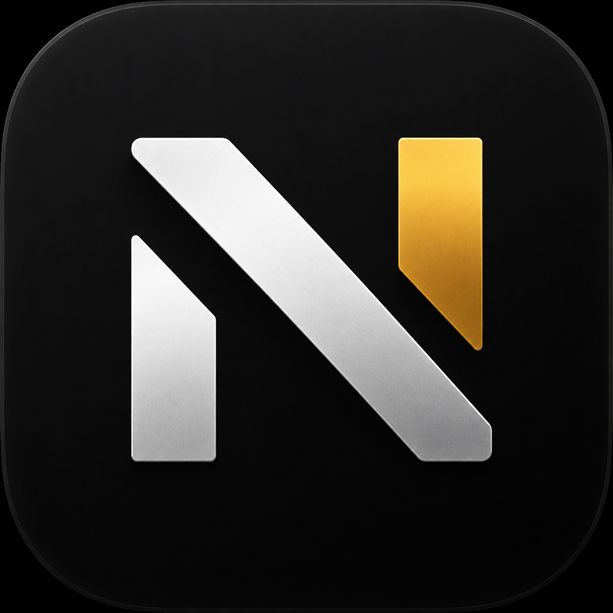

NURVANSegnalare un contenuto illegale
Ultimo aggiornamento:
Chiunque può segnalarci un contenuto presente su Nurvan che ritiene illegale, anche senza avere un account: per esempio una tua foto caricata da altri senza il tuo permesso, dati personali diffusi senza consenso, minacce o una truffa. Su Nurvan foto e documenti non sono pubblici: restano tra un coach e i suoi atleti. I programmi si condividono con un codice e i messaggi sono nella chat tra coach e atleta.
Se usi Nurvan e il problema è in una chat, puoi anche usare Segnala e Blocca direttamente dalla chat.
Invia la segnalazione
Cosa succede dopo
- Ti confermiamo la ricezione per email, con il numero della segnalazione.
- Una persona la esamina con attenzione e in modo obiettivo, di norma entro 24 ore. Non usiamo sistemi automatici per decidere.
- Se il contenuto è illegale o viola i nostri termini di servizio lo rimuoviamo o ne blocchiamo l'accesso e possiamo sospendere l'account. Chi lo aveva caricato riceve la motivazione.
- Ti scriviamo la decisione e il motivo. Se non sei d'accordo puoi contestarla rispondendo all'email entro 6 mesi, oppure rivolgerti a un organismo di risoluzione extragiudiziale certificato o all'autorità giudiziaria.
- Se la segnalazione riguarda un reato che minaccia la vita o la sicurezza delle persone, informiamo le autorità competenti.
Punto di contatto (Digital Services Act)
Il punto di contatto unico per gli utenti e per le autorità degli Stati membri, la Commissione europea e il Comitato europeo per i servizi digitali (articoli 11 e 12 del Regolamento UE 2022/2065) è l'indirizzo . Puoi scriverci in italiano o in inglese.
Il servizio è fornito da , .
Uso scorretto delle segnalazioni
Dopo un avviso, possiamo sospendere per un periodo ragionevole l'esame delle segnalazioni di chi ne invia spesso di manifestamente infondate.